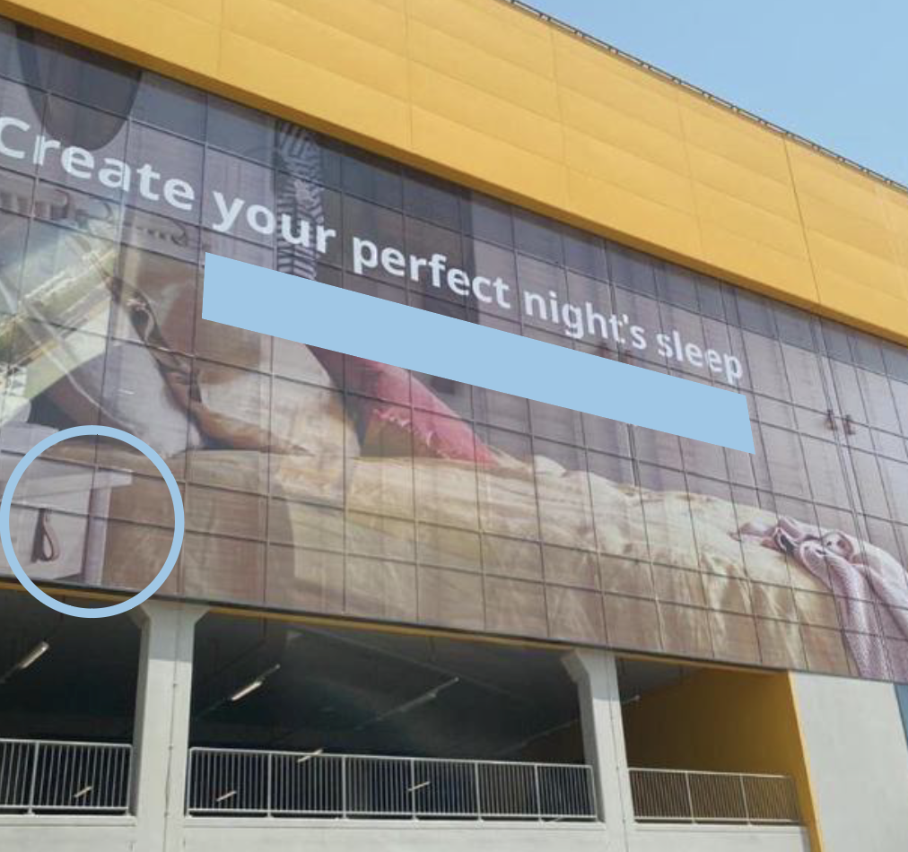
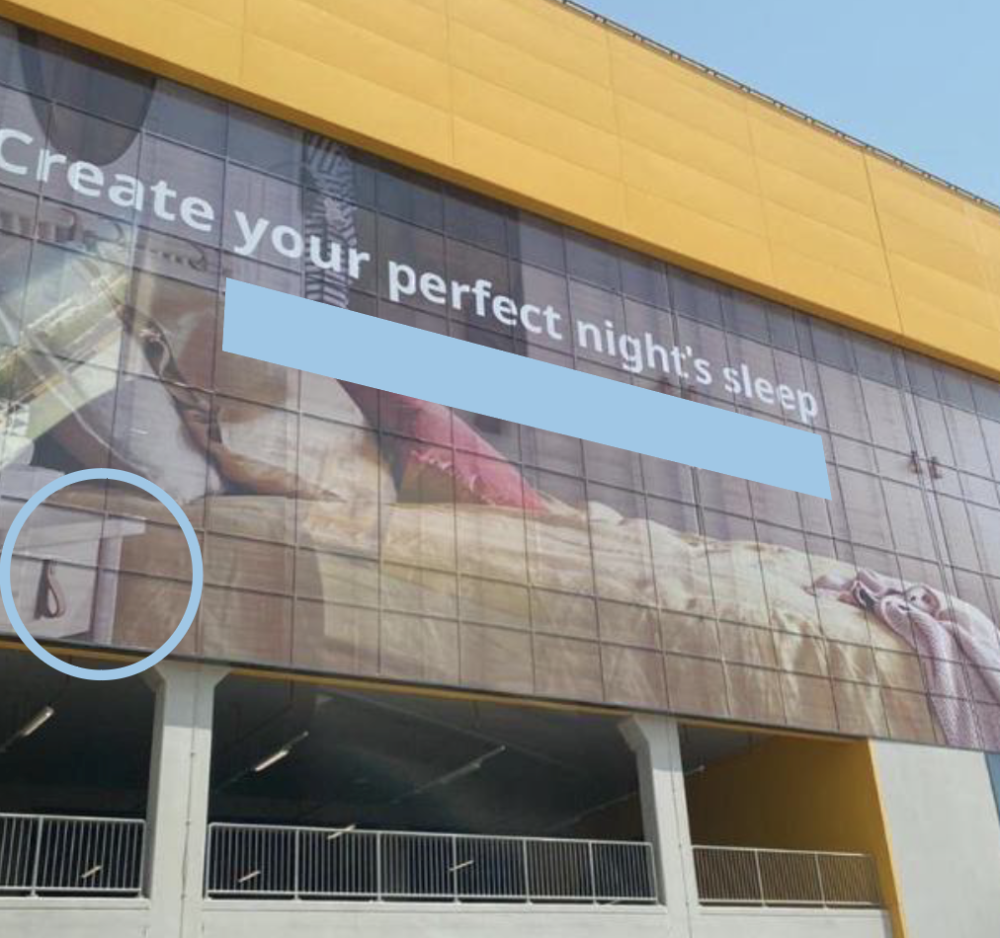

Lost in Translation
BACK
View Solution
I love a good translation gaffe! The blue box below covers the translation of the English text above it, but the text wasn't quite translated
properly...
Your tasks are to:
1. Find the coordinates of this building
2. Translate the covered text
3. Identify the person who posted the updated sign
4. Find the name of the (circled) bedside table 
Your tasks are to:
1. Find the coordinates of this building
2. Translate the covered text
3. Identify the person who posted the updated sign
4. Find the name of the (circled) bedside table 